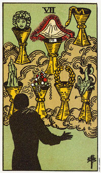

圣杯七代表应该认知你内在需求。
圣杯七是一张代表自我发现、心灵成长以及认识内在需求的牌。提醒你，充分了解自己与自己的行动，你需要行动，也需要思考。对行动有所思考能帮助你将直接的经验转变为知识，并更向智慧与理解靠近。
没有思考，行动很快就会变得重视，而没有行动与经验，思考则可能变的索然无味，且毫无意义。
这张七代表你需要向内探索自己，以追求所有爱的来源。你应该确认你所真正需要的是什么，并发现什么东西足以添满你的感情。接着你可能认识到：假设你不爱你自己，那么也没有人能给予你足够的爱。这是明白“满足必须是来自内心”的时刻。
这张牌描绘你在追寻你真正的身份。左上方杯子中的脸代表有时候你会以此面具或伪装来面对这个世界。左下方杯子中的城堡代表家，或家的感觉。你带着这种感觉从一个家到另一个家。
旁边的杯子中装着珠宝，象征物质的力量，是吸引或排斥具有统一物质性的事物的力量。第四个杯子里装着花圈，象征着个人的力量。下一个杯子装着恶魔，代表你必须时时面对的恶魔，他们来自你潜意识的深处。
第六个杯子中的蛇代表性及创造的能量。而遮盖住第七个杯子的寿衣则隐藏你真正的或精神上的认同。当你和前面的六个杯子达成协议后，你就有能力透过第七个杯子更深刻的认清你自己了。
大体上的意义
圣杯七代表你应该认清内心的需求，或者确认在某既定处境中你的需求为何。你需要向内心探索，并了解你不能老是藉由外来的手段来寻求满足。在事业分析当中，这张牌是说在这段期间内你必须自问，目前这种处境将把你的人生带往何处。你觉得满足吗?如果不，又是为什么呢?你需要什么?只有你确认自己的需求和欲望之后，不能判断该如何满足它们。
它也代表你应该离开一段时间，或是暂避内心安静之处，看看如果你的生命当中错失了些东西，那到底是什么呢?
两性关系上的意义
圣杯七意味这时候你该退缩，你应该确认在这段关系中你需要的是什么，并观察这些需求是否被满足了。它可能暗示，你认识到这段关系中缺少了某些东西。
花点时间了解你内在的需求，并深思你真正需要的什么，而非你可能想要的是什么。你将可以辨认出一种你的伴侣会乐于让你满足的需求。
伊莲觉得在她和萧恩的关系当中似乎缺少什么，但就是无法明确指出那到底是什么。她和一位女伴到一处健康休闲中心度了两个礼拜的假。她待在那里的时候，做了一次按摩，这使她清清楚楚体验到什么是她所需要的：抚摸。她明白了萧恩几乎很少碰她的身体，而较喜欢以文字来和她沟通。一回到家，她鼓励萧恩多触摸她，而且后来他们都完成了一项按摩课程。
如果伊莲没自那段关系中抽离出来一些时日，或许她还得花更长的时间摸索，才能了解她生活中到底少了什么东西。透过沉思，她也有可能会获得同样的理解，但应该也需要若干独处的时光。七代表给予自己那样的时间。
倒立的圣杯七
当圣杯七倒立时，象征使美梦成真的一个决定。这张牌代表将你的梦想化为实际。也可能暗示说，基于精神的原因，某种处境需要的是灵感或超脱，而你却太重视物质或实际的东西了。你可能忙着赚钱和花钱，而忽略了你精神上的需求。换句话说，你可能完全为了追逐金钱，以及钱可以买的东西而活着。
倒立的牌再次表示你必须回到前一张正立的牌上，去精通其中所揭示的课题。一这个例子而言，或许你应该返回六的舒适状态，以提醒你自己，那些东西同样会令人厌倦;或者提醒你，所有那些舒适的东西本身并不足以满足你的需求。
格列葛芮成长于战争期间的东欧，所以他知道贫穷的滋味。现在他是一个相当富有的人，但是旧记忆仍然萦绕不去，世界上所有的安全对她来说都是不够的。由于内心缺乏安全感，他无法相信外面世界任何看得见的安全。他身陷圣杯六中，无法自拔。
他仍然辛勤的工作，不过现在已经开始思考在赚钱和花钱的过程中是否可以找到任何的满足。这种“赚钱与花钱”的情况正是倒立的圣杯七所呈现的。